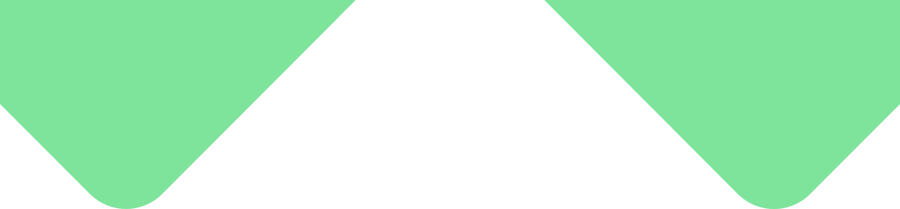

Ideata da noi grazie all’esperienza acquisita nel tempo .
Siamo un’azienda digitale che si concentra sulla generazione di opportunità di business.
Obiettivi chiari e definiti perseguiti con un approccio personalizzato verso risultati concreti e misurabili.
Qualifichiamo i dati in tempo reale consentendo di incrementare il ROI delle azioni di lead generation.